호랑가시나무언덕 게스트하우스
게스트하우스는 도시 속에 마련된 작은 쉼터로 고즈넉한 분위기 속에서
산책, 독서, 음악 감상 등 다양한 여가 활동을 만끽할 수 있는 최적의 공간입니다.
객실소개
- 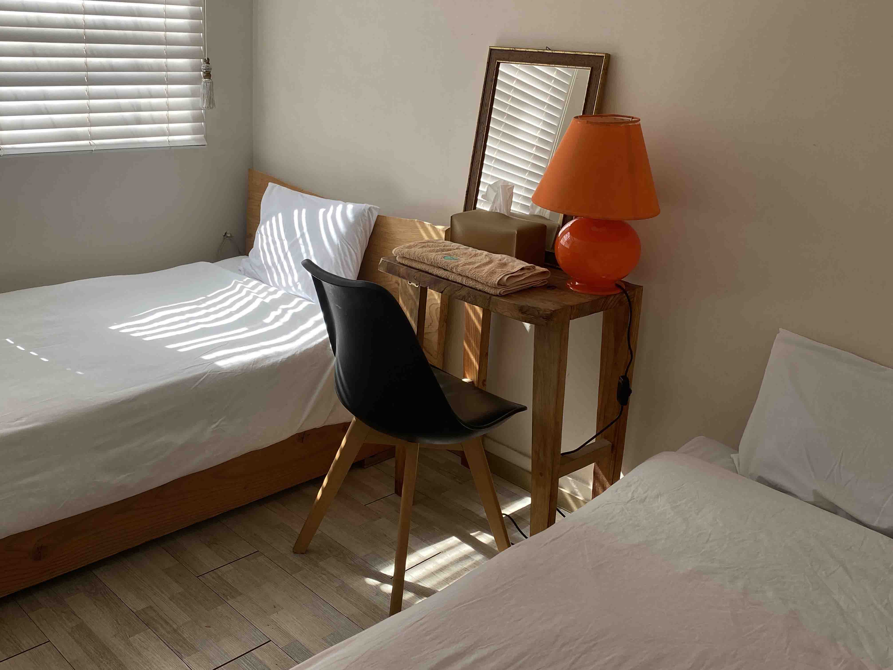
포사이드방
2인용 객실 - 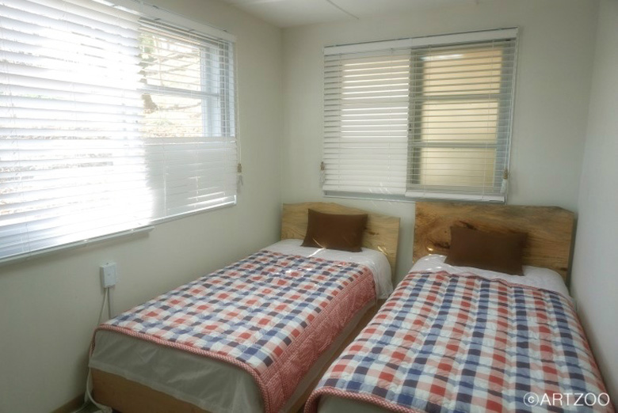
우월순방
2인용 객실 - 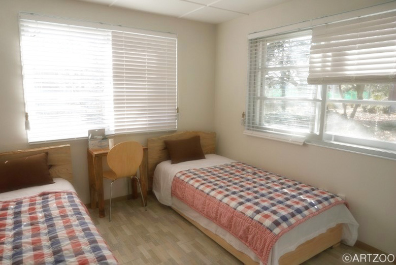
배유지방
2인용 객실 - 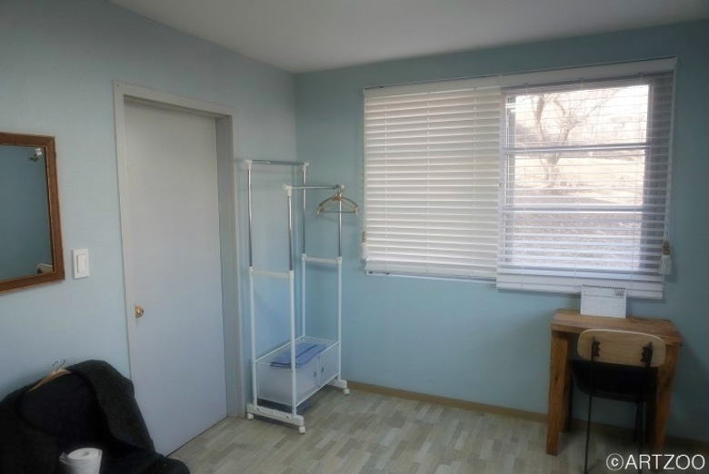
오웬방
2인용 객실 - 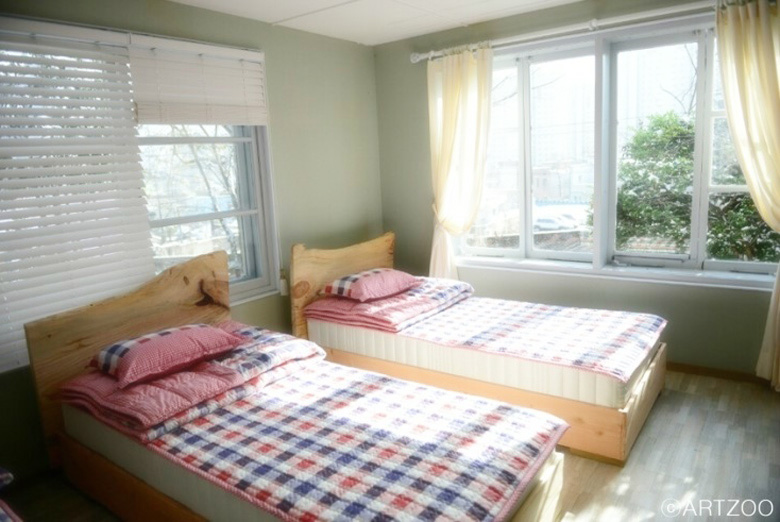
서로득방
3인용 객실 - 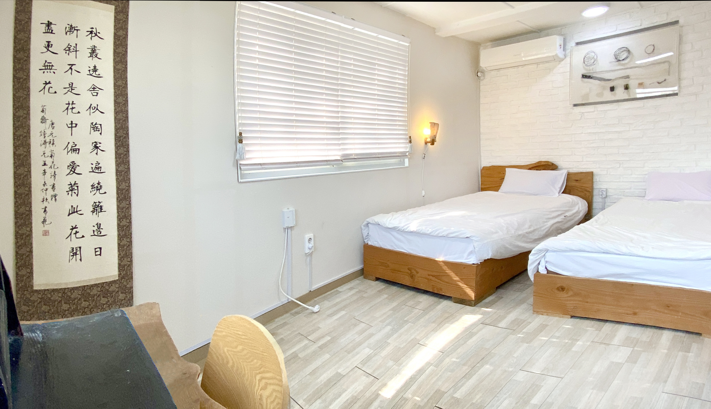
유수마방VIP
3인용 객실 - 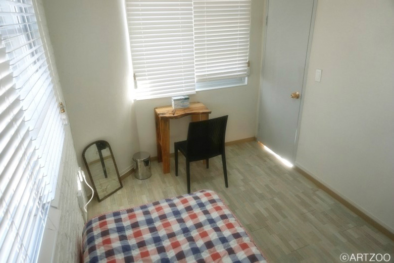
서서평방VIP
3인용 객실
게스트하우스 주변 관광지 소개
호남신학대에서 수피아여고로 이어지는 양림동 언덕배기는
수령 200년 이상의 호랑가시나무들이 다수 자생하고 있어서 ‘호랑가시나무 언덕’이라고도 불립니다.
그 언덕 중간에 위치한 뉴수마 선교사 사택은 건축된 지 70여년이 된 적벽돌 건물로
현재 호랑가시나무언덕 게스트하우스로 사용되고 있습니다.
- 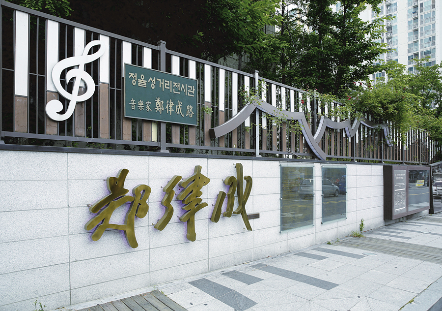정율성 거리
- 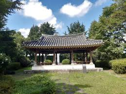양파정
- 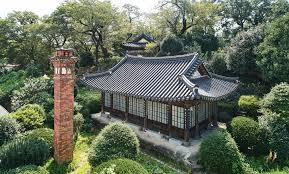최승효 가옥
- 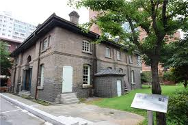오웬기념각
- 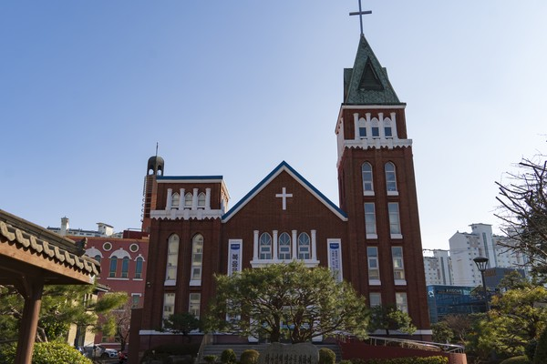양림교회
- 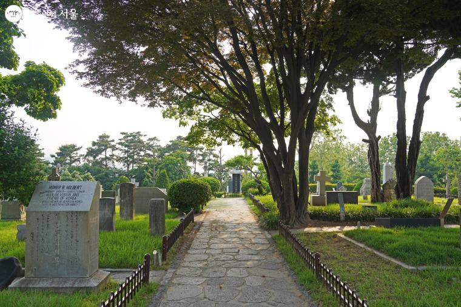선교사 묘원
찾아오시는 길
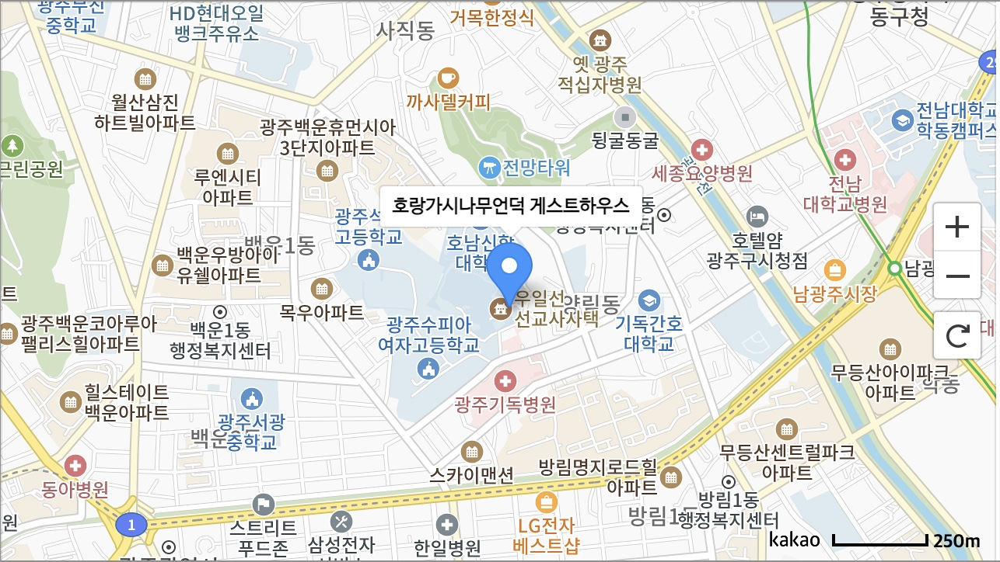
- 시내버스
- 기독병원 정류장 → 게스트하우스 (도보 10분)
버스노선 : 금남55 - 양림휴먼시아2차 정류장 → 게스트하우스 (도보 30분)
버스노선 : 순환01, 진원17, 지원25, 봉선27, 문흥48, 금남59, 봉선76, 첨단95, 송정98, 화순217, 화순218, 화순218-1 - 지하철
- 남광주역 3번 출구 → 게스트하우스 (도보 25분)
- 문화전당역 1, 3번 출구 → 게스트하우스 (도보 35분)